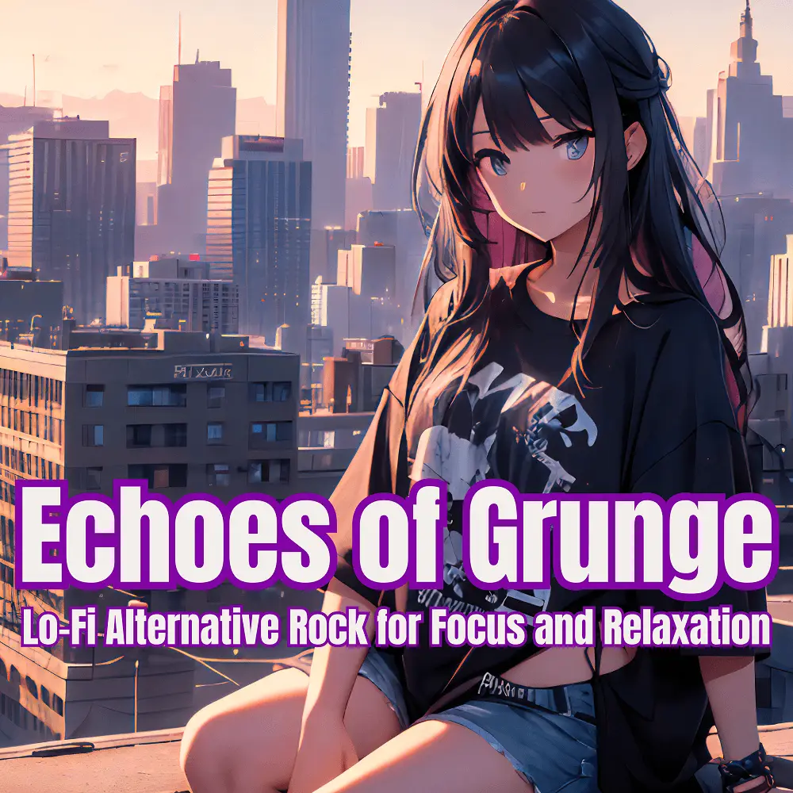

Lo-Fi · Alternative Rock
Echoes of Grunge：Lo-Fi Alternative Rock for Focus and Relaxation
Nanashino-chan
Explore Echoes of Grunge：Lo-Fi Alternative Rock for Focus and Relaxation by Nanashino-chan: 35 instrumental tracks spanning Lo-Fi / Alternative Rock. Start with Whispers in the Rain / Faded Memories, preview the collection and find your favorites on streaming services.
2025-05-28 · Released · 35 tracks · Instrumental
Preview the album
The jacket stays here until you choose a track. Playback uses YouTube.
YOUTUBE PREVIEW
Choose a track to listen
The jacket stays here until you choose a track. Playback uses YouTube.
If playback is unavailable, open the album or track on the streaming service.
Find this album on streaming services
Links marked “search” open search results. Select the album or track on the service.
Track list 35
- 01Whispers in the Rain
- 02Faded Memories
- 03Echoes of Yesterday
- 04Distant Thunder
- 05Rusty Strings
- 06Broken Chords
- 07Nightfall Serenade
- 08Shattered Dreams
- 09Flickering Lights
- 10Fading Horizons
- 11Windswept
- 12Midnight Reverie
- 13Silent Rebellion
- 14Underneath the Noise
- 15Restless Echoes
- 16Haunted Heartstrings
- 17Forgotten Roads
- 18Through the Static
- 19Grunge Daze
- 20Endless Twilight
- 21Cracks in the Wall
- 22Solitude's Soundtrack
- 23Drowning in Sound
- 24Buried in Time
- 25Fractured Soul
- 26Gravel Roads
- 27Lonely Highways
- 28Ghost Town Groove
- 29Torn Apart
- 30Fallen Leaves
- 31Ashes in the Wind
- 32Streets of Silence
- 33End of the Line
- 34Beneath the Surface
- 35Fading Embers
Find a sound for your next post
Copy “Nanashino-chan + track title” and paste it into your social app’s music search. Availability depends on your region and account. Copying the name does not grant usage rights.